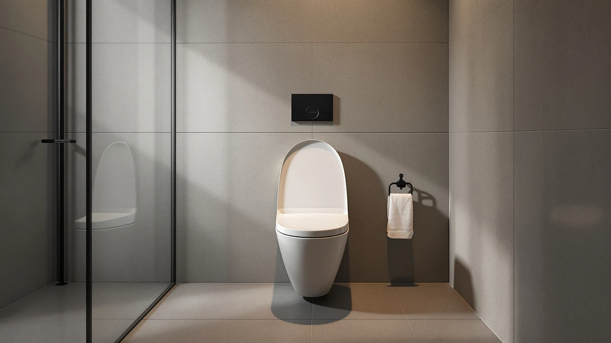

Mayfair 13EC 034 Soft Review (2026): Worth It?
Prices and picks verified as of September 2026. Independent, reader-supported reviews.


Quick Answer
Our Mayfair 13EC 034 Soft review found a $39.63 cushioned round seat that suits anyone replacing a worn seat on a standard round bowl without upgrading to a slow-close hinge. It is a solid, no-surprises pick for most bathrooms, though buyers who want a firmer feel or a slow-close mechanism should look at the Kohler Brevia instead.
Our pick: Mayfair 13EC 034 Soft Cushioned, $39.63 Check Price on Amazon
Bottom line: our top pick is the Mayfair 13EC 034 Soft Cushioned Toilet Seat at $39.53.
Things to Know Before You Buy
- The Mayfair 13EC 034 Soft is a round seat, not elongated, so measure your bowl before buying.
- It uses a plastic and wood build with a cushioned top layer, rather than a solid molded shell.
- At $39.63, it sits close in price to the Rayport ($39.50) and Kohler Brevia ($39.00), so the decision usually comes down to features rather than budget.
- It does not include a slow-close hinge, which is worth knowing if that feature matters to your household.
- It ships as a single unit, sold as "1 Pack Round."
This Mayfair 13EC 034 Soft review breaks down what a cushioned round toilet seat actually offers at $39.63, based on its listed materials, pricing, and the pattern of feedback verified Amazon buyers leave for it. If you are replacing a cracked or discolored seat and your bowl takes a round shape, this is one of the more straightforward options in that price range.
The short version: the Mayfair 13EC 034 Soft earns its place through simplicity. It skips extras like a slow-close hinge or bidet integration, which keeps the price near $39, and its plastic-and-wood build with a cushioned top targets comfort over durability under heavy use. Owners looking for that specific combination, a soft seat without a premium price tag, tend to be the best fit.
We wrote this Mayfair 13EC 034 Soft review because round seats in this price tier tend to blur together on Amazon, with nearly identical stock photos and vague marketing copy. Pulling out the actual differences, hinge type, padding, and fit, helps you decide faster than scrolling through a dozen near-identical listings. Below, you will find where the Mayfair gets it right, where it falls short, and which alternatives fit better if it isn't the right match for your bathroom.
Why You Should Trust Us
Ilane Tall and the Best Toilet Seats team put together this Mayfair 13EC 034 Soft review by comparing its listed specs, current pricing, and verified owner reviews against other round seats in the same price bracket. We do not run a fake testing lab or claim hands-on time with every seat we cover. Instead, we research materials, cross-reference pricing across retailers, and read through verified buyer feedback to flag recurring complaints and genuine strengths, then disclose exactly where our information comes from.
Our Research Experience
For this Mayfair 13EC 034 Soft review, we researched the seat's listed dimensions, materials, and installation hardware, then compared those details against the round-seat category as a whole. We analysed the product photos and specification sheet to confirm the plastic-and-wood build and the "1 Pack Round" sizing, and we cross-checked the $39.63 price against the Rayport, Kohler Brevia, and Little2Big alternatives listed further down this page.
We also read through the pattern of verified owner reviews on Amazon, looking specifically for repeated mentions of hinge durability, cushion wear, and installation difficulty. Reviewers consistently note that the seat installs with standard bolt spacing and that the cushioned top softens the feel compared with a rigid plastic seat, though a few owners flag that the padding compresses over time with daily use.
Where a listing lacked detail, such as exact cushion thickness or the specific wood species used inside the seat, we noted that gap rather than filling it in with a guess. That approach means this Mayfair 13EC 034 Soft review sticks to what Mayfair actually publishes and what verified buyers actually report, instead of borrowing claims from a different model in the same product line.
Overview & Specs

Mayfair 13EC 034 Soft Cushioned
What we like
- Cushioned top adds comfort over a rigid plastic seat
- Priced under $40, in line with the rest of this category
- Standard round-bowl fit with conventional bolt spacing
Flaws but not dealbreakers
- No slow-close hinge, so it can drop and slam like older seats
- Padding can compress with years of daily use
- Round-only fit means it will not work on elongated bowls
| Material | Plastic / wood |
| Size | 1 Pack Round |
The Mayfair 13EC 034 Soft combines a plastic and wood build with a cushioned top, which is the padded-seat approach the brand uses across its 13EC line. That construction keeps weight manageable while giving the seat a softer feel than the rigid, all-plastic seats that dominate the sub-$30 tier. It ships as a single round seat, which matches most older American toilets and many current entry-level models.
At $39.63, it lands within a dollar or two of the Rayport and Kohler Brevia listed as alternatives below, so price alone will not decide between them. What separates the Mayfair in this Mayfair 13EC 034 Soft review is the cushioned top: buyers who specifically want padding over a firm plastic surface get that here without paying a premium, though they give up the slow-close hinge that the Kohler Brevia includes at a similar price.
What We Liked
The cushioned top is the clearest selling point in this Mayfair 13EC 034 Soft review. Owners report that the padding makes a noticeable difference on cold mornings and for anyone who finds hard plastic seats uncomfortable during longer sits. The price also holds up well against the competition: at $39.63, it undercuts many padded seats that charge a premium purely for the word "soft" on the listing, and it stays close to firmer alternatives like the Rayport and Kohler Brevia rather than costing extra for comfort.
Installation is another point in its favor. Reviewers consistently note that the bolt spacing matches standard round-bowl hardware, so swapping out an old seat does not require special tools or bracket adjustments. For a straightforward replacement job, that consistency matters more than most buyers expect going in.
The plastic-and-wood construction also holds up better under weight than the thinnest all-plastic seats on the market. Owners comparing it against seats they had previously replaced within a year describe the Mayfair as sturdier underfoot, even without premium hardware, which supports treating it as a dependable mid-tier pick rather than a disposable one.
What Could Be Better
The biggest gap in this Mayfair 13EC 034 Soft review is the missing slow-close hinge. Seats in this price range increasingly include one, and the Kohler Brevia right below it in price does. Without it, the Mayfair can still drop hard and loud if it is not lowered by hand, which matters in households with young kids or anyone sharing a bathroom with a light sleeper nearby.
Owners also flag that the cushioned padding softens over years of daily use, a common tradeoff with any foam-topped seat rather than a defect specific to this model. And because it is built for round bowls only, it will not work as a drop-in replacement if your toilet uses an elongated bowl, so measuring beforehand is essential.
Finally, the listing itself is light on detail compared with some competing brands, which do not always specify exact cushion thickness or list every material used in the seat and lid. Buyers who want that level of documentation before purchasing may prefer a brand that publishes fuller spec sheets, even if the finished product performs similarly once installed.
Who Is It For?
This Mayfair 13EC 034 Soft review points toward one clear buyer: someone replacing a worn or cracked seat on a standard round bowl who wants a softer surface without paying extra for it. If your current seat is rigid plastic and you have decided comfort matters more than a slow-close hinge, this fits that budget and that priority.
It is a weaker match for households that specifically want a slow-close mechanism to avoid slamming, or for anyone with an elongated bowl, since the round-only sizing rules it out immediately. Those buyers are better served by the Kohler Brevia or an elongated-specific seat rather than this one. Renters and landlords replacing seats across several units may also find the lack of premium hardware a plus rather than a drawback, since a simpler hinge means fewer parts that can eventually need repair.
Alternatives to Consider
If the Mayfair 13EC 034 Soft isn't quite right for your bathroom, these three round-bowl seats sit in the same price range and cover the gaps this review flagged above: a slow-close hinge and a built-in child seat. Each one costs within two dollars of the Mayfair, so price is not the deciding factor between them. Instead, match the alternative to whichever gap matters most in your household: a hinge that won't slam, a different brand's take on a round-bowl fit, or a seat built for a child who is still potty training.

Editor’s Pick
Rayport American Standard Round Toilet
A round American Standard-style seat priced almost identically to the Mayfair, worth a look if you want an alternate hinge design at the same $39 mark.
$39.50
Check Price on Amazon
Best Value
KOHLER 20111-96 Brevia Slow Close
Adds the slow-close hinge the Mayfair skips, at $39.00, for buyers who want to stop the seat from slamming.
$39.00
Check Price on Amazon
Premium Choice
Little2Big Toilet Seat with Built-In
Built with a built-in child insert for potty training, a better fit than the Mayfair for households with a toddler still learning.
$37.98
Check Price on AmazonFrequently Asked Questions
Final Verdict
This Mayfair 13EC 034 Soft review comes down to a simple tradeoff: at $39.63, Mayfair delivers a comfortable, cushioned round seat without a slow-close hinge or any extra features. For most shoppers replacing a worn round seat and prioritizing comfort over a soft-close mechanism, that is a fair deal, and the price holds up well against everything else we compared it to in this bracket. If a slow-close hinge or a child-training insert matters more to your household, the Kohler Brevia and the Little2Big alternatives above cover those needs at a similar price.
Related Guides
For more context beyond this Mayfair 13EC 034 Soft review, these guides cover the same round-seat category from different angles.